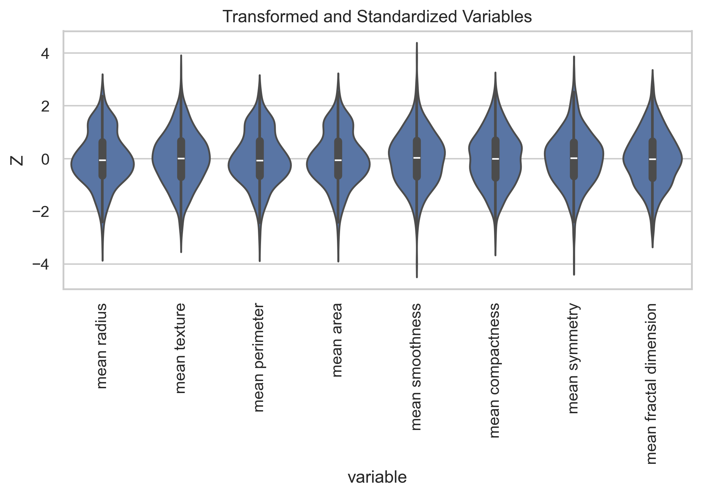
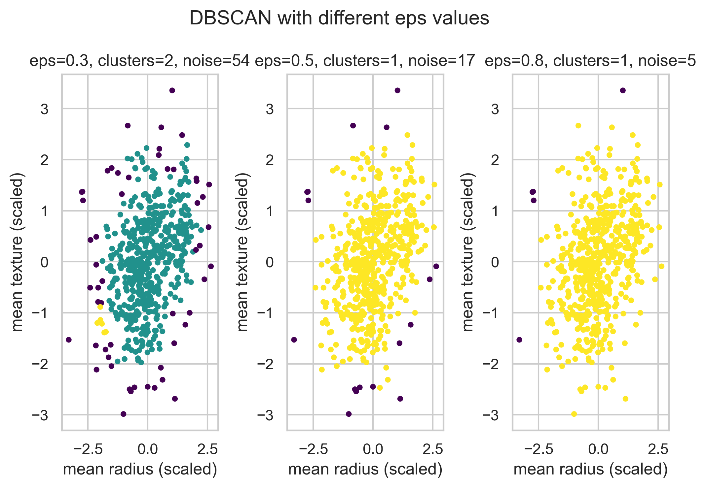

import numpy as npimport pandas as pdimport seaborn as snsimport matplotlib.pyplot as pltfrom sklearn.datasets import load_breast_cancerfrom sklearn.preprocessing import StandardScalerfrom sklearn.cluster import KMeans, AgglomerativeClustering, DBSCANfrom sklearn.metrics import silhouette_samples, silhouette_score, adjusted_rand_scorefrom sklearn.metrics import pairwise_distancesfrom scipy.cluster.hierarchy import linkage, dendrogram, fclusterfrom scipy.spatial.distance import pdist, squareformimport plotly.express as pximport plotly.graph_objects as gosns.set_theme(context="notebook", style="whitegrid")FIGSIZE = (7, 5)RANDOM_STATE =42
Data (scaled)
The Breast Cancer Wisconsin dataset contains 30 features (obtained from images) describing characteristics of the cell nuclei, along with a binary diagnosis (malignant/benign).
Here we use the Box-Cox transform for all numerical variable (filter strictly positive means), but in practise we would probably look at the variables more individually and decide on a suitable transformation.
Notice that per default subsequent scaling is also part of the Box-Cox transformation implemented by PowerTransformer()
Code
from sklearn.preprocessing import PowerTransformer# filter variablesXs = X[[ c for c in Xif (c.startswith("mean")and (X[c] >0).all()and X[c].notna().all())]]# Box-Cox transformpt = PowerTransformer(method="box-cox")Z = pt.fit_transform(Xs)Z = pd.DataFrame(Z, columns=Xs.columns)# Plotting for sanity checknum_norm = Z.melt(var_name="variable", value_name="value")plt.figure(figsize=FIGSIZE)sns.violinplot(data=num_norm, x="variable", y="value")plt.xticks(rotation=90)plt.ylabel("Z")plt.title("Transformed and Standardized Variables")plt.tight_layout()plt.show()

DBSCAN: Density-Based Spatial Clustering
DBSCAN (Density-Based Spatial Clustering of Applications with Noise) is a clustering algorithm that groups together points that are close to each other based on a distance metric and a minimum number of neighbors. Unlike K-Means and Hierarchical clustering, DBSCAN can find arbitrarily shaped clusters and identify noise/outliers.
Key Parameters
eps: The maximum distance between two samples for one to be considered as in the neighborhood of the other
min_samples: The number of samples in a neighborhood for a point to be considered as a core point
Advantages of DBSCAN
Can find clusters of arbitrary shape (not limited to spherical clusters like K-Means)
Robust to outliers (identifies them as noise)
Does not require specifying the number of clusters a priori
Works well with spatial data
Code
from sklearn.cluster import DBSCAN# Use mean radius and mean texture for 2D visualizationX_2d_viz = Z[["mean radius", "mean texture"]].to_numpy()# Try different eps values to see the effecteps_values = [0.3, 0.5, 0.8]fig, axes = plt.subplots(1, 3, figsize=FIGSIZE)for i, eps inenumerate(eps_values): dbscan = DBSCAN(eps=eps, min_samples=5) labels = dbscan.fit_predict(X_2d_viz) n_clusters =len(set(labels)) - (1if-1in labels else0) n_noise =list(labels).count(-1) axes[i].scatter(X_2d_viz[:, 0], X_2d_viz[:, 1], c=labels, cmap='viridis', s=10) axes[i].set_title(f'eps={eps}, clusters={n_clusters}, noise={n_noise}') axes[i].set_xlabel('mean radius (scaled)') axes[i].set_ylabel('mean texture (scaled)')plt.suptitle('DBSCAN with different eps values')plt.tight_layout()plt.show()print(f"eps=0.3: {n_clusters} clusters, {n_noise} noise points")

eps=0.3: 1 clusters, 5 noise points
Code
# Run DBSCAN on all 30 features with tuned parametersdbscan_full = DBSCAN(eps=1, min_samples=10)labels_full = dbscan_full.fit_predict(Z)n_clusters_full =len(set(labels_full)) - (1if-1in labels_full else0)n_noise_full =list(labels_full).count(-1)print(f"DBSCAN on all 30 features: {n_clusters_full} clusters, {n_noise_full} noise points")# Compare with diagnosisif n_clusters_full >=2: ari_dbscan = adjusted_rand_score(bc["Diagnosis"].map({"malignant": 0, "benign": 1}), labels_full)print(f"Adjusted Rand Index vs Diagnosis: {ari_dbscan:.3f}")
DBSCAN on all 30 features: 1 clusters, 349 noise points
---title: "DBSCAN"categories: - dbscandescription: Data Clustering - there is moredraft: falsejupyter: b92g---```{python}#| label: load_packages#| warning: falseimport numpy as npimport pandas as pdimport seaborn as snsimport matplotlib.pyplot as pltfrom sklearn.datasets import load_breast_cancerfrom sklearn.preprocessing import StandardScalerfrom sklearn.cluster import KMeans, AgglomerativeClustering, DBSCANfrom sklearn.metrics import silhouette_samples, silhouette_score, adjusted_rand_scorefrom sklearn.metrics import pairwise_distancesfrom scipy.cluster.hierarchy import linkage, dendrogram, fclusterfrom scipy.spatial.distance import pdist, squareformimport plotly.express as pximport plotly.graph_objects as gosns.set_theme(context="notebook", style="whitegrid")FIGSIZE = (7, 5)RANDOM_STATE =42```## Data (scaled)The Breast Cancer Wisconsin dataset contains 30 features (obtained from images) describing characteristics of the cell nuclei, along with a binary diagnosis (malignant/benign).### Load Data```{python}#| label: load_databc_raw = load_breast_cancer(as_frame=True)bc = bc_raw.frame.rename(columns={"target": "Diagnosis"})bc["Diagnosis"] = bc["Diagnosis"].map({0: "malignant", 1: "benign"})# keep ann dataframe for future annotationsann = bc[["Diagnosis"]].copy()feature_cols = bc_raw.feature_namesX = bc[feature_cols]```### Transform and Scale DataHere we use the Box-Cox transform for all numerical variable (filter strictly positive means),but in practise we would probably look at the variables more individually and decide on a suitabletransformation.Notice that per default subsequent `scaling` is also part of the Box-Cox transformation implemented by PowerTransformer()```{python}#| label: transform_scale_datafrom sklearn.preprocessing import PowerTransformer# filter variablesXs = X[[ c for c in Xif (c.startswith("mean")and (X[c] >0).all()and X[c].notna().all())]]# Box-Cox transformpt = PowerTransformer(method="box-cox")Z = pt.fit_transform(Xs)Z = pd.DataFrame(Z, columns=Xs.columns)# Plotting for sanity checknum_norm = Z.melt(var_name="variable", value_name="value")plt.figure(figsize=FIGSIZE)sns.violinplot(data=num_norm, x="variable", y="value")plt.xticks(rotation=90)plt.ylabel("Z")plt.title("Transformed and Standardized Variables")plt.tight_layout()plt.show()```## DBSCAN: Density-Based Spatial ClusteringDBSCAN (Density-Based Spatial Clustering of Applications with Noise) is a clustering algorithm that groups together points that are close to each other based on a distance metric and a minimum number of neighbors. Unlike K-Means and Hierarchical clustering, DBSCAN can find arbitrarily shaped clusters and identify noise/outliers.### Key Parameters- **eps**: The maximum distance between two samples for one to be considered as in the neighborhood of the other- **min_samples**: The number of samples in a neighborhood for a point to be considered as a core point### Advantages of DBSCAN- Can find clusters of arbitrary shape (not limited to spherical clusters like K-Means)- Robust to outliers (identifies them as noise)- Does not require specifying the number of clusters a priori- Works well with spatial data```{python}#| label: dbscan_demofrom sklearn.cluster import DBSCAN# Use mean radius and mean texture for 2D visualizationX_2d_viz = Z[["mean radius", "mean texture"]].to_numpy()# Try different eps values to see the effecteps_values = [0.3, 0.5, 0.8]fig, axes = plt.subplots(1, 3, figsize=FIGSIZE)for i, eps inenumerate(eps_values): dbscan = DBSCAN(eps=eps, min_samples=5) labels = dbscan.fit_predict(X_2d_viz) n_clusters =len(set(labels)) - (1if-1in labels else0) n_noise =list(labels).count(-1) axes[i].scatter(X_2d_viz[:, 0], X_2d_viz[:, 1], c=labels, cmap='viridis', s=10) axes[i].set_title(f'eps={eps}, clusters={n_clusters}, noise={n_noise}') axes[i].set_xlabel('mean radius (scaled)') axes[i].set_ylabel('mean texture (scaled)')plt.suptitle('DBSCAN with different eps values')plt.tight_layout()plt.show()print(f"eps=0.3: {n_clusters} clusters, {n_noise} noise points")``````{python}#| label: dbscan_optimized# Run DBSCAN on all 30 features with tuned parametersdbscan_full = DBSCAN(eps=1, min_samples=10)labels_full = dbscan_full.fit_predict(Z)n_clusters_full =len(set(labels_full)) - (1if-1in labels_full else0)n_noise_full =list(labels_full).count(-1)print(f"DBSCAN on all 30 features: {n_clusters_full} clusters, {n_noise_full} noise points")# Compare with diagnosisif n_clusters_full >=2: ari_dbscan = adjusted_rand_score(bc["Diagnosis"].map({"malignant": 0, "benign": 1}), labels_full)print(f"Adjusted Rand Index vs Diagnosis: {ari_dbscan:.3f}")```## Summary - DBSCAN: density-based, eps + min_samples $\to$ arbitrary shaped clusters + noise detection - many more: see [cluster analysis algorithms](https://en.wikipedia.org/wiki/Category:Cluster_analysis_algorithms)